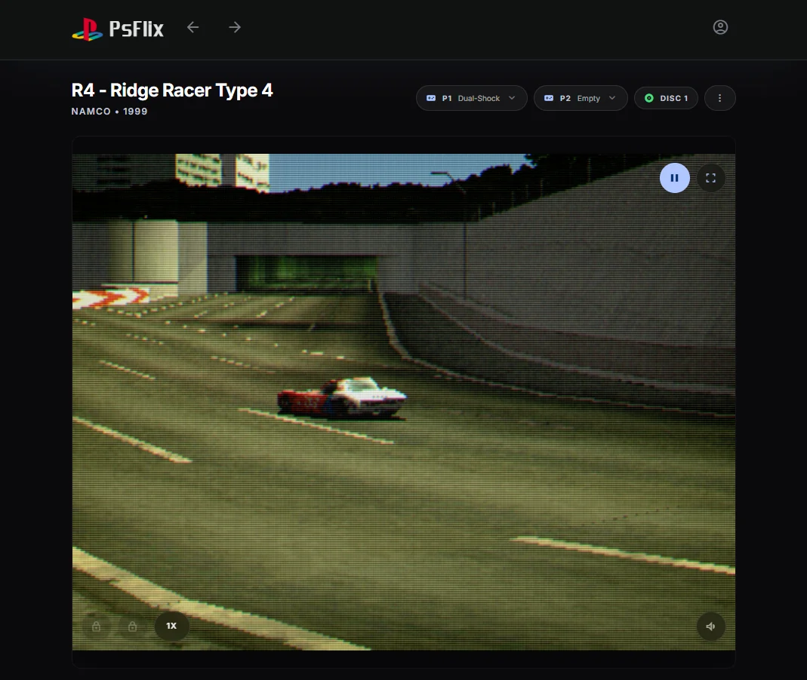
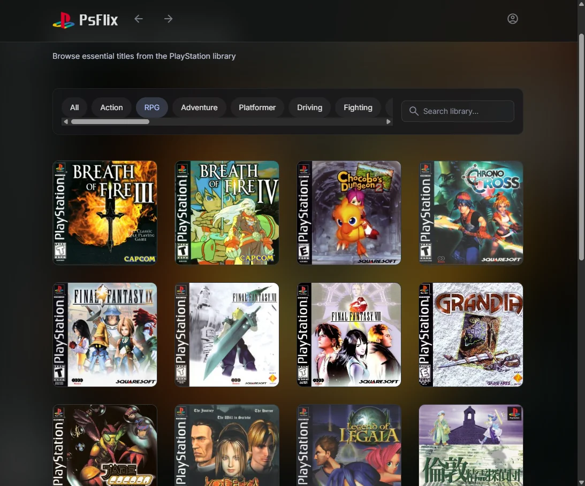
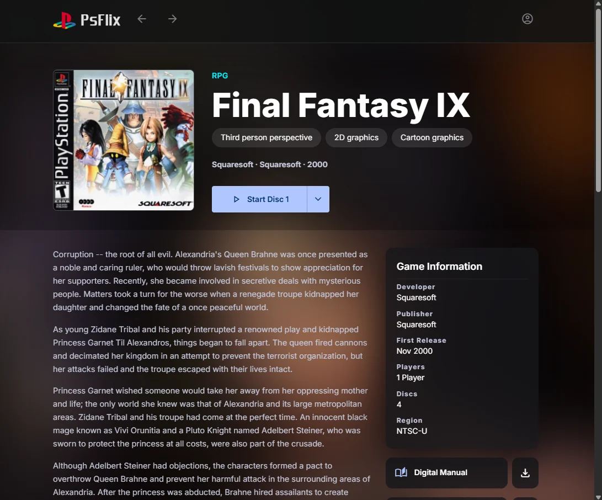

Browse like you mean it
A Netflix-style wall of cover art with instant search, genre chips, and keyboard navigation. Heart your games and they gather in a personal Favorites row.
Self-hosted · No installs · Runs in the browser
PSflix is a Netflix-style catalog for PS1 classics. Browse your library, stream any disc straight from your instance, and pick up where you left off — your saves follow you everywhere.

Features
From the first browse to the five-hundredth save, PSflix covers the whole console ritual — in a browser tab.
A Netflix-style wall of cover art with instant search, genre chips, and keyboard navigation. Heart your games and they gather in a personal Favorites row.
Cover art, screenshot galleries, developer and region metadata, multi-disc handling, and digital manuals you can read right on the page.
Games run on pcsx-rearmed compiled to WebAssembly — entirely in your browser. Plug in a gamepad, use the keyboard, or even the PS1 mouse for classics that support it.
Discs are CHD images served in small chunks while you play and cached for instant relaunches. A game starts before the disc has fully arrived — and is never exposed as a file.
Four slots per disc, plus an Auto slot that fires every five minutes, when you leave, and when you close the tab. Continue drops you straight back into your latest save.
Virtual 15-block cards, two console slots. Mount, eject, rename, format, and
import .mcr/.mcd images — manage PS1 save data like it's
1998.
Sign in and save states and memory cards sync to your account across devices. A sync chip shows the live status, and the newest save wins on conflicts.
One PocketBase application serves the API, the app, and your games. Run the Docker image or a single binary — your library, your hardware, your rules.
Screenshots
Click any screenshot to view it full-size.


Self-hosting
PSflix is self-hosted software: one PocketBase application serves the catalog, the
emulator, and your players. Add titles by uploading CHD images made with
chdman, attach manuals and guides, and run it all from the Docker
image or a single binary.